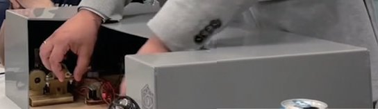

Commercial and clinical-stage systems · levshai_menshikov2023
LevshAi
LevshAi intelligent robotic motion-copying system for endovascular neurosurgery

1 / 3


- Family
- Commercial and clinical-stage systems (commercial)
- Devices
- catheters and guidewires; dispenser for gel; coil installation on the control side (Sec. II)
- Degrees of freedom
- N.R. (axial movement and rotation of catheters)
- Push
- Other drives
- Twist
- Not reported
- Tested up to
- Bench
- Sim-to-real
- None found — No simulation-trained controller found for this robot.
Testing
- Highest level
- Bench
- What was tested
- tested by surgeons of the Russian Endovascular Neuro Society, qualitative only (Sec. I)
- Key numbers
- N.R.
Mechanism
- Push (translation)
- other: stepper transmission mechanisms (type N.R.)
- Twist (rotation)
- stepper transmission (N.R.)
- Device range
- N.R.
- Target anatomy
- cerebral vessels (endovascular neurosurgery, aneurysm coiling)
Sensing and interface
- Force sensing
- optical motion encoders and piezo sensors along the catheter detect twisting and vibration (Sec. II-C)
- Leader and haptics
- leader identical to a real catheter and torquer; stepper motors render twist resistance, linear miniature solenoids render wall contact, LED force scale
- Imaging
- X-ray fluoroscopy; AI processing of fluoroscopy
- Sterility
- N.R.
Size
- Footprint (mm)
- N.R.
- Mass (kg)
- N.R.
Simulation
- Simulation model
- personalised 3-D vascular simulator built from patient images (menshikov2023_preoperative, title; CBS Sec. II-E)
- Sim-trained controller
- none found
Versions
- Lineage
- 2023 IEEE CBS system paper (full); 2023 ICARA personalised 3-D vascular simulator (title)
Sources
- Intelligent Robotic Motion Copying System LevshAi for Neurosurgical Endovascular Operations with Haptic Feedback and Preoperative Personalized Simulation · 2022 IEEE International Conference on Cyborg and Bionic Systems (CBS), 2023 · doi:10.1109/cbs55922.2023.10115398 [menshikov2023_intelligent]
- Preoperative Personalized Vascular 3D Simulator of the Intelligent Robotic Ecosystem LevshAI for Endovascular Neurosurgery · 2023 9th International Conference on Automation, Robotics and Applications (ICARA), 2023 · doi:10.1109/icara56516.2023.10125981 [menshikov2023_preoperative]
Notes
- Notes
- Company prototype with university co-authors; no quantitative results or hardware photo in the paper.
This record
- Read level
- full — full (CBS 2023)
- Picture
- menshikov2023_levshai_CBS Fig. 6 (preclinical trial photo), hardware box at the bottom edge — licence: publisher copyright (IEEE); grade C
- Picture changes
- the PDF splits the photo into 7 raster tiles: stitched at native size, a 3-px tile seam filled from the neighbouring column, cropped to the hardware box (people excluded); not upscaled
- Found by
- gap: Gap searches for robots the other searches missed.
- Data
- JSON · YAML:
records/robots/levshai_menshikov2023.yaml - Correction
- Suggest a correction [repository not created yet]